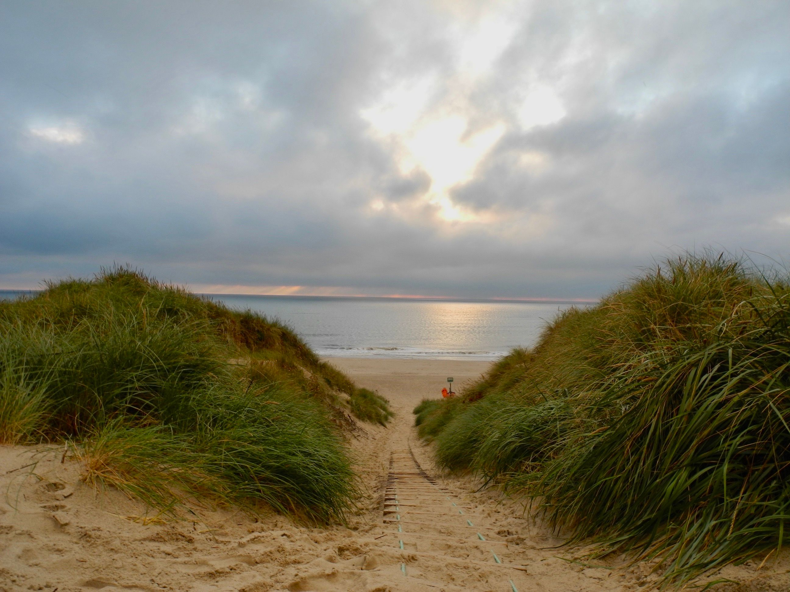

Walking on Waves
Saunton-based surf school offering coaching for beginners through to progressing surfers.
North Devon surf destination
A huge dune-backed beach known for long rolling waves, beginner-friendly days and some of North Devon's best longboarding.
Surf lessons
Surfbooker currently includes two main surf schools operating at Saunton Sands.
Saunton-based surf school offering coaching for beginners through to progressing surfers.

Surf lessons and coaching at Saunton Sands for new and developing surfers.
Accommodation
There's a hotel above the beach; Braunton and Croyde have the wider choice. These are researched listings rather than Surfbooker reviews.
Surf hire
Verified surf hire for Saunton is available from Croyde Surf Hire, with equipment collected from its Croyde base.

Verified board and wetsuit hire serving Saunton, collected from Croyde with free soft roof racks available for transport.

Surf shop in Braunton, the village you pass through on the way to Saunton.
Beach café & Braunton
There's a beach café and shop at Saunton; Braunton, a few minutes inland, has a wider choice of cafés and pubs.

Beach shop and café building at the main car park, right by the sand.

Fish restaurant in Braunton.

Pub in the centre of Braunton.

Sandwich shop in Braunton.
Listed from Surfbooker's visit in August 2026 - not reviews. Check opening times before you travel.
Saunton Sands at a glance
Saunton Sands sits on the North Devon coast between Braunton and Croyde. The beach stretches for around three miles and is backed by Braunton Burrows, one of England's most important dune systems.
For surfers, Saunton is best known for long, slower-breaking waves and a wide sandy beach. On suitable days that makes it particularly appealing to beginners and longboarders, although larger winter swells can still produce demanding conditions.
Unlike Croyde, there is no busy village directly behind the beach. The setting feels open and natural, with dunes, coast path, surf facilities and a large beach car park rather than a built-up seafront.



Beach & surf guide
Saunton's gentle gradient helps produce the slower, rolling waves that make it so popular with longboarders and surf schools. The inside can provide forgiving white water on suitable days, while more experienced surfers can look for longer walls further out.
The beach works through a wide range of tides, but the character changes significantly. Low tide exposes a vast amount of sand and pushes the water a long way from the beach entrance.
A sandy bottom, broad beach and softer-breaking waves make Saunton one of North Devon's more practical learning beaches when conditions are suitable.
Saunton's long rolling shoulders are particularly popular with longboarders looking for smoother, longer rides.
Larger winter swells can produce powerful surf and long paddle-outs. Don't assume Saunton is automatically easy because it is known for beginners.
The sea can move a very long way through the tide. At low water, expect a lengthy walk from the beach entrance to the surf.
The broad sandy bottom is one of the reasons Saunton is so widely used for surf instruction and progression.
On anything beyond small surf, the paddle back out can take considerably more effort than the mellow reputation might suggest.
Away from the surf
Saunton is more about landscape and outdoor space than a busy seaside centre.

Explore one of England's most important dune systems and the heart of the North Devon Biosphere.

Walk sections of the South West Coast Path with coastal views towards Croyde and the surrounding headlands.

Take time to explore the dune habitats, plants, birds and insects found around the Burrows.

Saunton remains a strong year-round option for dog owners, subject to the current beach zoning and dune guidance.

With around three miles of sand, you can turn a surf session into a proper coastal walk without leaving the beach.
Braunton Burrows
The enormous dune landscape directly behind Saunton is a major part of what makes the beach feel so different from North Devon's more built-up surf spots.
Braunton Burrows is the largest sand-dune system in England and sits at the heart of the North Devon UNESCO Biosphere. It is also protected as a Special Area of Conservation and a Site of Special Scientific Interest.
The dunes support a remarkable range of plants, wildlife and habitats. Visitors should stick to permitted access and respect fenced or sensitive areas.
Surfbooker local tips
Saunton's long, rolling waves are one of the main reasons it has such a strong longboarding reputation. On the right day you can get much longer, more forgiving rides than at nearby Croyde.
Saunton is often a very good place to learn, but larger winter surf can still be powerful and the paddle back out can become tiring. Conditions always matter more than the beach's reputation.
The combination of an 8.5 m tidal range and very gentle beach gradient means the water can be a surprisingly long way from the car park at low tide.
Dogs are welcomed year-round, but current beach guidance asks dog walkers to turn left at the bottom of the slipway. Follow the current signs and use leads around busy or fenced dune areas.
There are designated disabled spaces, a concrete ramp, RADAR-key accessible toilets and all-terrain beach wheelchairs available to hire.
The dunes directly behind the beach are part of one of England's most important coastal habitats. Saunton is worth treating as more than just a surf stop.
Parking & facilities
Saunton Beach Car Park switched to a barrierless ANPR system in November 2025. Remember to pay for the chargeable portion of your stay before leaving.
Your registration is recorded automatically. There is no exit barrier, so don't mistake an open exit for free parking.
Payment can be made using on-site terminals, the Beach Shop or the current digital payment method shown on signs around the car park.
Overnight parking is not permitted at Saunton Beach Car Park.
The upper section begins as tarmac before changing to hard-packed but uneven gravel and sand closer to the beach facilities.
Public toilets, accessible toilets and open-air showers are available close to the main beach access.
Parking prices and charging hours can change, so check the current beach information before travelling rather than relying on an old tariff.
Accessibility
The main beach facilities include designated parking, a concrete access ramp and specialist beach-wheelchair hire.
Landeez-style all-terrain beach wheelchairs are available to hire from the Beach Shop for adults and children. Advance booking is sensible during summer and school holidays.
Seven signed disabled spaces are provided on the tarmac area close to the main entrance and beach facilities.
A roughly 25 m concrete ramp leads down towards the beach. At the end there is a transition onto softer sand before the firmer beach surface.
Two accessible toilets are available using the RADAR/NKS key scheme, alongside the main public toilets and open-air showers.
Verified equipment hire serving Saunton is collected from Croyde rather than from the main Saunton beach facilities.
At low tide the sea can be a very long way from the ramp because Saunton shelves so gently.
Getting here
Saunton is reached from Braunton via the B3231 towards Croyde. The main beach entrance is on the coastal road before reaching Croyde.
Barnstaple is the nearest railway station. From there you'll need onward bus, taxi or road transport.
Bus services connect Barnstaple, Braunton, Saunton and Croyde. Check the current timetable before travelling because frequencies vary by season and day.
Did you know?
American troops trained around Braunton Burrows during the Second World War in preparation for the D-Day landings.
Military use continues today, including amphibious exercises and training that can involve aircraft and equipment drops over the Burrows.
Braunton Burrows lies at the heart of the North Devon UNESCO Biosphere Reserve.
Saunton was the site of Britain's only known subterranean termite colony. After a decades-long eradication programme, the colony was declared eliminated in 2021.
Saunton Surf Life Saving Club is based here, reflecting the beach's long relationship with surfing and beach safety.
Worth the short drive
Saunton sits in the middle of one of North Devon's best clusters of surf beaches.
More compact, more powerful and generally less forgiving than Saunton. Croyde is the obvious next stop when you want a punchier beach break.
Best for: intermediate and advanced surfers when conditions suit.
The sheltered southern end of Woolacombe Sands can be useful when southerly or south-westerly winds are affecting more exposed beaches.
Best for: checking when wind direction is causing problems elsewhere.
A huge exposed beach with its own major surf scene and plenty of room to spread out.
Best for: another full surf destination with lots of beach space.
FAQs
Yes, on suitable days. Its sandy bottom, broad beach and slower-breaking waves make it one of North Devon's better learning beaches. Larger winter surf can still be demanding.
Surfbooker currently includes two main surf schools operating at Saunton: Walking on Waves and Surf Saunton.
Yes. Croyde Surf Hire serves Saunton, with equipment collected from its Croyde base.
Yes. Saunton is particularly well known for long, rolling waves and is one of North Devon's most popular longboarding beaches.
Dogs are welcomed year-round, but the beach uses local zoning and asks dog walkers to turn left at the bottom of the slipway. Follow the current signs and use leads around busy or fenced dune areas.
The beach has seven designated disabled spaces, a concrete access ramp, RADAR-key accessible toilets and all-terrain beach wheelchairs available to hire. At low tide, the distance to the sea can still be considerable.
The main beach car park uses barrierless ANPR. Your registration is recorded automatically and you need to pay for the chargeable portion of your stay before leaving. Overnight parking is not permitted.
Braunton Burrows is the enormous dune system directly behind Saunton Sands. It is the largest sand-dune system in England and forms the heart of the North Devon UNESCO Biosphere.
Yes. The area is still used for military training, including large exercises. Visitors should follow any temporary access instructions or signs in place during training activity.
Sources and checking
Surfbooker editorial guidance reviewed September 2026. Recheck parking, access, flags, tide and lifeguard cover immediately before travelling.
Surf businesses
Own or manage a surf school, surf shop or surf-hire business serving Saunton Sands? Contact us to request a listing, request a Surfbooker review or update information already shown on the site.
Request a listing or reviewThere is no charge to make a request. Inclusion and editorial reviews are independently assessed by Surfbooker.